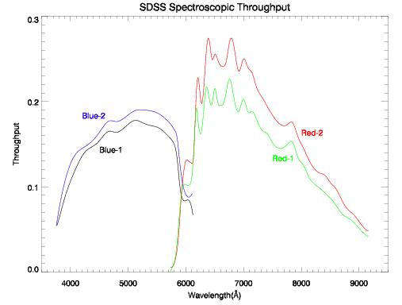

|
|
| The color selection of the SDSS standard stars. Red points represent
stars selected as spectroscopic standards. (Most are flux standards; the
very blue stars in the right hand plot are"hot standards"used for telluric
absorption correction.) |
| 
|
| Throughput curves for the red and blue channels on the two SDSS spectrographs. |